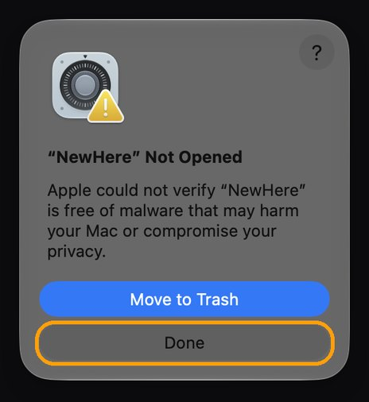
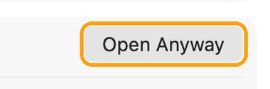

New file.
Right here.
Right-click anywhere in a Finder window and choose New: a Pages document, a Word file, a spreadsheet, a text or Markdown file, or a bit of code. It appears right where you are, ready to name.
Everything you'd make a file for.
NewHere adds one New submenu to Finder's right-click menu. Finder's own items stay exactly where they were.
Documents
Pages, Numbers and Keynote (if you have them), Word, Excel and PowerPoint, plain text, rich text and Markdown.
Code & data
HTML, CSS, JavaScript, TypeScript, Python, Shell, Swift, C, C++, Java, Go, Rust, JSON, CSV, XML and YAML.
Google Docs, Sheets, Slides
Starts a new one in your browser, so it's one right-click away too.
Copy as Pathname
Right-click a file and copy its full path, for Terminal, scripts or a message.
A New button for the toolbar
Prefer a button? Control-click Finder's toolbar, choose Customize Toolbar…, and drag New in.
Never overwrites
New files get Finder-style names like “Untitled 2” and never replace anything. No account, no tracking, no network.
Set up in a minute.
The quickest way is one line in Terminal. Press ⌘ Space, type “Terminal” and press Return. Then paste this line and press Return. NewHere puts itself in Applications and opens, with no security prompts.
curl -fsSL https://lidworks.github.io/install.sh | bash -s newhere
Like to see what it runs first? Read the installer. It only downloads NewHere from our GitHub page, copies it to Applications and opens it.
Or download the .dmg
- Download NewHere.dmg, open it and drag NewHere into Applications.
- Open NewHere from Applications. We haven't paid Apple to sign it yet, so the first time macOS stops it. Click Done. Don't click Move to Trash.

- Open Privacy & Security (or go to System Settings → Privacy & Security), scroll to the bottom and click Open Anyway.

- Enter your Mac password, then click Open Anyway once more. You only do this once. The button stays there for about an hour; if it's gone, open NewHere again and it comes back.
Then
- NewHere turns itself on in Finder and shows a small window when it's ready. If the window asks you to, click Open System Settings and switch NewHere on; the window notices by itself.
- Right-click in any Finder window and choose New. The first time you make a file on the Desktop or in Documents or Downloads, macOS asks whether NewHere may use that folder. Click Allow.
Questions
I don't see New when I right-click.
Open NewHere from Applications. Its window tells you whether the Finder extension is on and has a button to turn it on. If it's on but the menu is missing, click Relaunch Finder in that window.
Does NewHere stay running?
A tiny helper waits in the background to create the files Finder asks for. It has no Dock or menu-bar icon. Open NewHere again any time to see its window.
Do the Word, Excel and PowerPoint files need Microsoft Office?
No. They're blank files that open in Office, Pages, Numbers, Keynote or Google Docs.
How do I remove it?
Drag NewHere from Applications to the Trash. Finder's menu goes back to how it was.